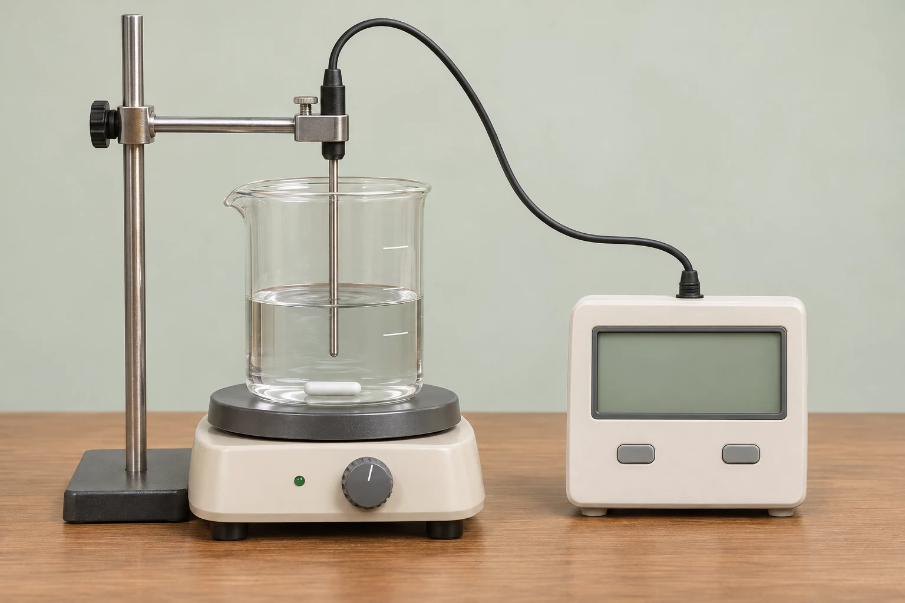

從吸收熱量，追蹤溫度的改變
五個學習區塊・一個單元小測讓 1 g 水升高 1°C，需要多少熱？
熱量單位：從 100 g 水的升溫認識「卡」
溫度我會量了，水吸收的熱量要用什麼單位？
1 g 水太少，不容易操作。我們先量取 100 g 水，觀察它從 20°C 升到 21°C。
觀察同一份水
100 g 水・初溫 20°C
已量取 100 g 水升高了幾度？
目前水溫 − 起始水溫 ＝ 溫升
正在準備器材畫面…
熱量可以用「卡」記錄，符號是 cal。讓 1 g 水升高 1°C 所需的熱量，約是 1 cal。
共同條件：水都升高 1°C
| 水量 | 約需吸收的熱量 |
|---|---|
| 1 g 水 | 1 cal |
| 100 g 水 | cal |
熱量依模型估算；溫度計提供水溫讀值。
器材與模型條件
先將空燒杯在電子秤上歸零，再量取 100 g 水。溫度探針浸入水中，不碰杯底或杯壁，並以攪拌使水溫較均勻。畫面呈現的是生成的虛擬器材，並非實驗錄影。
模型分開計算水吸熱、玻璃容器吸熱與向 20°C 環境散熱；假設水與容器充分達到同溫。採水的近似比熱、容器熱容量 42 J/°C、有效供熱 20 W、散熱係數 0.5 W/°C；有效供熱不等於加熱板的額定功率。
動畫加速 4 倍，到 21°C 停熱；完成後保留當次讀值，不繼續模擬冷卻，也不呈現探針反應延遲與停熱後餘熱。100 g 水吸收約 100 cal 是模型換算，沒有將溫度計當作熱量計。
生活中的「大卡」和焦耳呢？
1 kcal（大卡）＝1,000 cal（卡）。J（焦耳）也是能量單位，1 cal 約為 4.2 J。
改變單位，並不會改變實際傳遞的能量，就像同一段長度能用公分或公尺表示。
同一杯水，吸收不同熱量會怎麼變？
熱量與溫升：固定質量，比較吸收熱量
「如果水量不變，多吸收一些熱，溫度會怎麼變？」
「先選吸收的熱量，再觀察溫度。記得比較的是『升高幾度』，不是只看最後幾度。」
一杯水的熱量紀錄
100 g 水・初溫 20°C吸收熱量與溫度
橫軸是吸收的熱量，縱軸是溫度。
| 條件 | 吸收熱量 | 末溫 | 升溫 |
|---|
水吸收的熱量直接計入水中；忽略容器吸熱與向外散熱。動畫時間不代表實際加熱時間。
「100 g 水吸收 1,000 cal，從 20°C 升到 30°C；吸收兩倍的熱量，就升高兩倍的溫度！」
「在同樣水量、沒有相變的條件下，吸收熱量和升溫成正比。30°C 減去 20°C，升溫才是 10°C。」
水裝得不一樣多，升溫有什麼不同？
質量與溫升：同種物質吸收相同熱量的比較
「每杯都吸收 1,000 cal，水比較多的那杯，會升到一樣的溫度嗎？」
「把 A 杯固定在 100 g，再改 B 杯。先試相同水量，再加到兩倍。」
同樣熱量，分給多少水？
各吸收 1,000 cal・初溫 20°C兩杯水的升溫比較
● A 杯● B 杯
| 水量 | 各吸收熱量 | 末溫 A／B | 升溫 A／B |
|---|
兩杯是同規格容器，水位隨水量改變。比較的是水實際吸收的熱量；忽略容器與散熱，時間為示意。
「同樣吸收 1,000 cal，100 g 水升高 10°C，200 g 水卻只升高 5°C。」
「水量加倍，同樣熱量造成的升溫就減半。反過來，如果要升高同樣的溫度，兩倍的水就需要兩倍的熱量。」
換一種物質，結果一樣嗎？
比熱：相同質量、相同吸熱量下的材料比較
「水量和熱量都會影響升溫，那物質本身也有差別嗎？」
「有。讓 1 g 物質升高 1°C 所需的熱量，叫做它的『比熱』。相同質量吸收相同熱量，比熱越大，升溫越少。」
同質量，換一種材料
各 100 g・各吸收 500 cal・初溫 20°C不同物質的升溫比較
● 水● 鋁
| 物質 | 各吸收熱量 | 末溫 水／金屬 | 升溫 水／金屬 |
|---|
以均勻溫度的樣品比較，忽略容器吸熱、散熱與導熱過程；不是測試熱傳導快慢。樣品及儀器尺寸為示意。
| 物質 | 比熱，約 cal／(g·°C) |
|---|---|
| 水 | 1.00 |
| 鋁 | 0.22 |
| 鐵 | 0.11 |
| 銅 | 0.093 |
「同樣 100 g、吸收 500 cal，水只升高 5°C，鋁卻升高約 22.7°C。水的比熱比較大！」
「也可以這樣想：相同質量要升高同樣的溫度，比熱大的物質，需要吸收更多熱量。」
用一個關係式整理剛才的發現
Q ＝ m × c × ΔT
吸收熱量＝質量 × 比熱 × 升溫；其中 ΔT＝末溫－初溫。
例如 100 g 水升高 10°C：100 × 1 × 10＝1,000 cal。先理解三個因素如何影響結果，再練習簡單判讀。
比熱能解釋哪些生活現象？
比熱的應用：暖暖水袋、海陸溫差與鍋具
「水不容易升溫，那為什麼適合裝進暖暖水袋？」
「換個方向想：同樣質量、降低同樣的溫度，比熱較大的物質，可以放出較多熱量。」
「所以不能只說『溫度高，熱量就多』，還得看質量、物質，以及改變了幾度。」
「沒錯。現在換你幫暖暖水袋安排一次公平的比較。」
單元小測
幫小葵準備暖暖水袋
用剛才的比較結果，判斷水量、升溫與比熱的關係。
「先用 100 g 水試做，再換成大一點的水袋。我想讓兩袋都從 20°C 升到 30°C！」
本頁以無相變、比熱近似固定的情形比較；加熱時間與器材尺寸為教學示意，比熱值取常溫附近近似值。
回到溫度與熱單元總覽